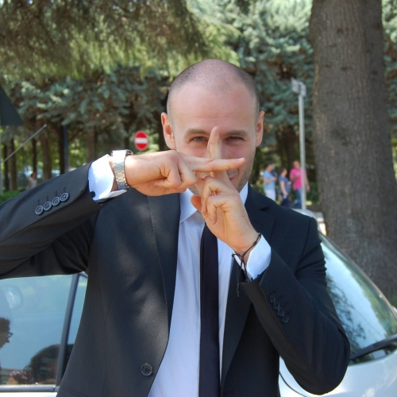

Since childhood I have always had a huge passion for science, physics and math, I’m also fond of European literature of the 19th and 20th centuries and I practice competitive swimming (supermaster circuit in Italy).
During my university and working career I specialized in: video game design, video game programming, software development, software design pattern, database management system, intelligent systems, machine learning, algorithms, graph theory, game theory, operations research, distributed computing, test-driven development.
I have been competing in the Italian Supermaster circuit (Master FIN) for several years. Results collected during the following seasons: 2014, 2015, 2016, 2017, 2021, 2022, 2023, 2024, 2025, 2026.
| Medal | Tally |
|---|---|
| 🥇 Gold | 10 |
| 🥈 Silver | 26 |
| 🥉 Bronze | 23 |
| 59 |